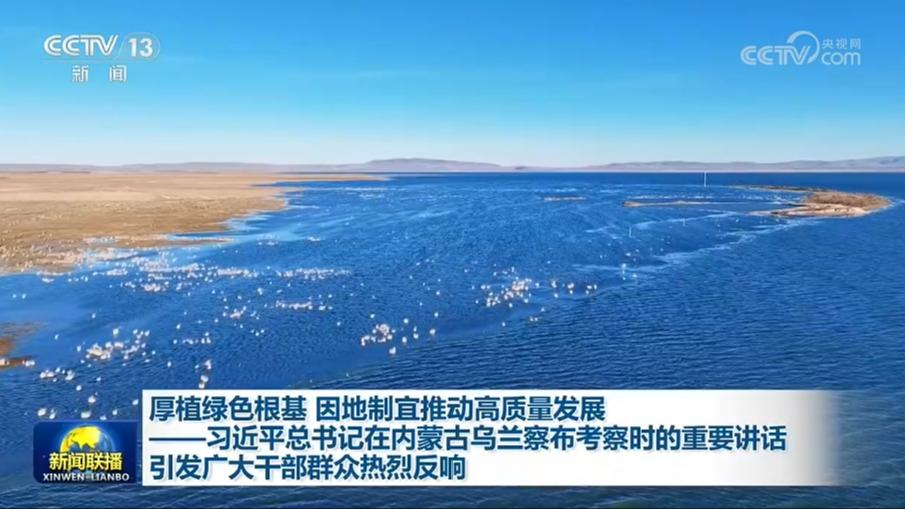
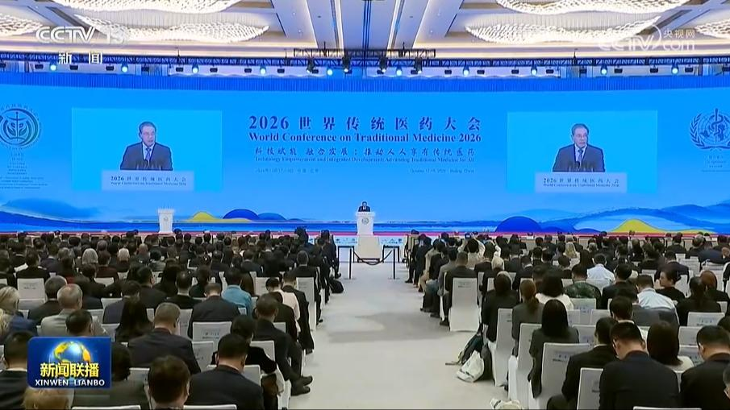
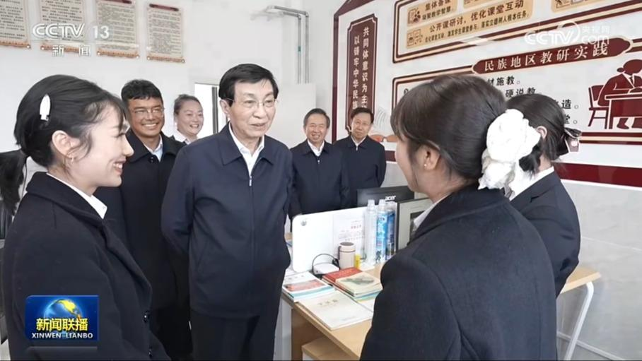
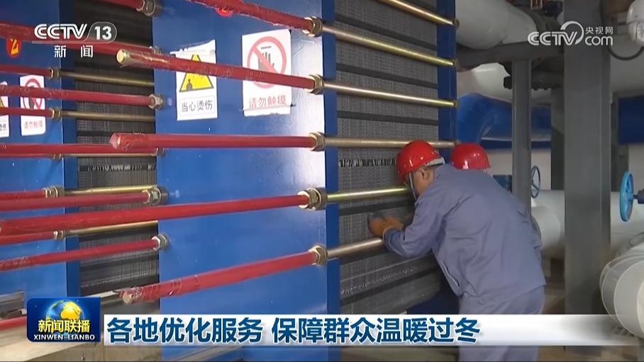
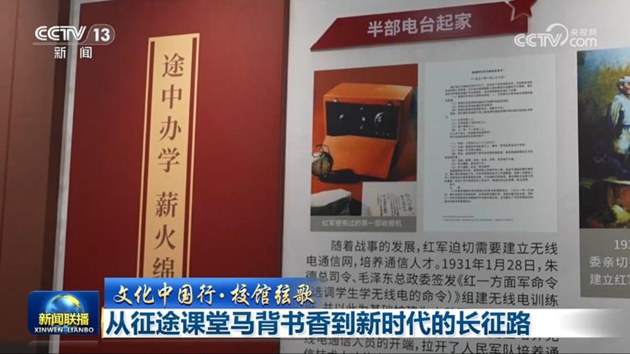
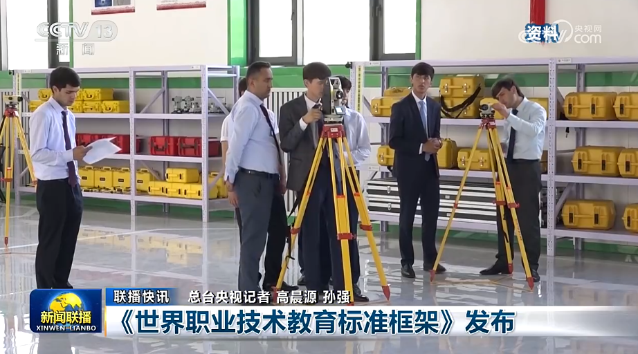
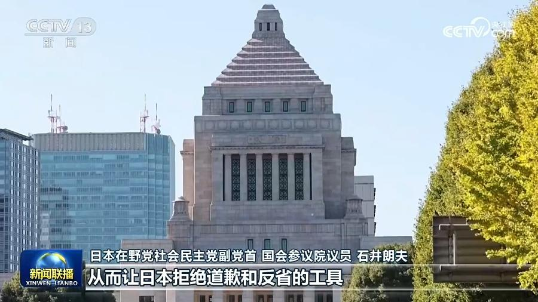
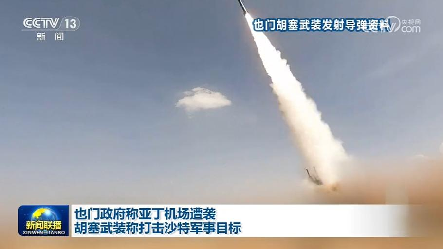

01

厚植绿色根基 因地制宜推动高质量发展——习近平总书记在内蒙古乌兰察布考察时的重要讲话引发广大干部群众热烈反响
绿色发展是高质量发展的应有之义。10月16日，习近平总书记在内蒙古自治区乌兰察布市考察，就统筹高质量发展和高水平保护、坚定不移走生态优先绿色发展之路作出一系列重要指示。广大干部群众表示，要认真学习贯彻习近平总书记重要讲话精神，树立和践行正确政绩观，以系统思维、全局观念筑牢生态安全屏障，不断塑造绿色发展新动能、新优势，因地制宜推动高质量发展。


绿色发展是高质量发展的应有之义。10月16日，习近平总书记在内蒙古自治区乌兰察布市考察，就统筹高质量发展和高水平保护、坚定不移走生态优先绿色发展之路作出一系列重要指示。广大干部群众表示，要认真学习贯彻习近平总书记重要讲话精神，树立和践行正确政绩观，以系统思维、全局观念筑牢生态安全屏障，不断塑造绿色发展新动能、新优势，因地制宜推动高质量发展。

10月17日上午，国务院总理李强在京出席2026世界传统医药大会开幕式并致辞。
当地时间17日下午，国务院总理李强应乌兹别克斯坦总理阿里波夫邀请，乘包机抵达这里，对乌兹别克斯坦进行正式访问。

中共中央政治局常委、全国政协主席王沪宁10月13日至16日在四川成都市、德阳市、甘孜藏族自治州调研。他表示，要以习近平新时代中国特色社会主义思想为指导，深入贯彻落实党的二十届四中全会精神，着眼为实现“十五五”时期发展、推进中国式现代化凝心聚力，扎实抓好铸牢中华民族共同体意识、推进中华民族共同体建设工作，扎实抓好系统推进我国宗教中国化、加强宗教事务治理法治化工作，巩固和发展民族和睦、宗教和顺、社会和……
商务部发布的数据显示，今年前八个月，我国服务贸易保持较快增长，其中，旅行、运输和知识密集型服务出口表现亮眼。
第140届广交会线下展进入第三天，一大批人工智能创新产品集中登场，新技术、新应用加速落地，为外贸增长注入新动能。

天气渐冷，北方多地陆续进入今冬供暖季，各地主动问需、优化服务，多举措保障群众温暖过冬。

烽火岁月、征途漫漫，求知报国的火种始终未曾熄灭。一代人以征途为课堂、以马背为书库，兴学育人、守护红色根脉。《文化中国行·校馆弦歌》走进西安电子科技大学、延安大学，回望两所红色高校的烽火过往与新时代担当，感悟跨越时空的长征精神传承。

《世界职业技术教育标准框架》发布

据日本媒体报道，日本首相高市早苗及多名政客今天（10月17日）向靖国神社供奉祭品，日本经济财政政策担当大臣城内实参拜了靖国神社。靖国神社里供奉着14名日本甲级战犯，日本人士批评日本右翼政客美化侵略历史，呼吁日本正视历史，对战争罪行进行深刻反省。

也门政府官员16日称，一架也门航空公司客机当天在南部的亚丁国际机场准备起飞时，两枚导弹落在飞机附近，机上乘客和机组人员没有伤亡。也门政府谴责胡塞武装对亚丁民用机场发动袭击。胡塞武装当天称，该组织再次对亚丁发动导弹袭击，打击了该机场附近巴德尔军事基地内的沙特军队指挥部和武器库。
俄称打击乌军需企业 乌呼吁欧盟援助